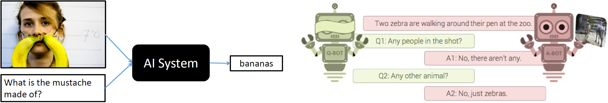
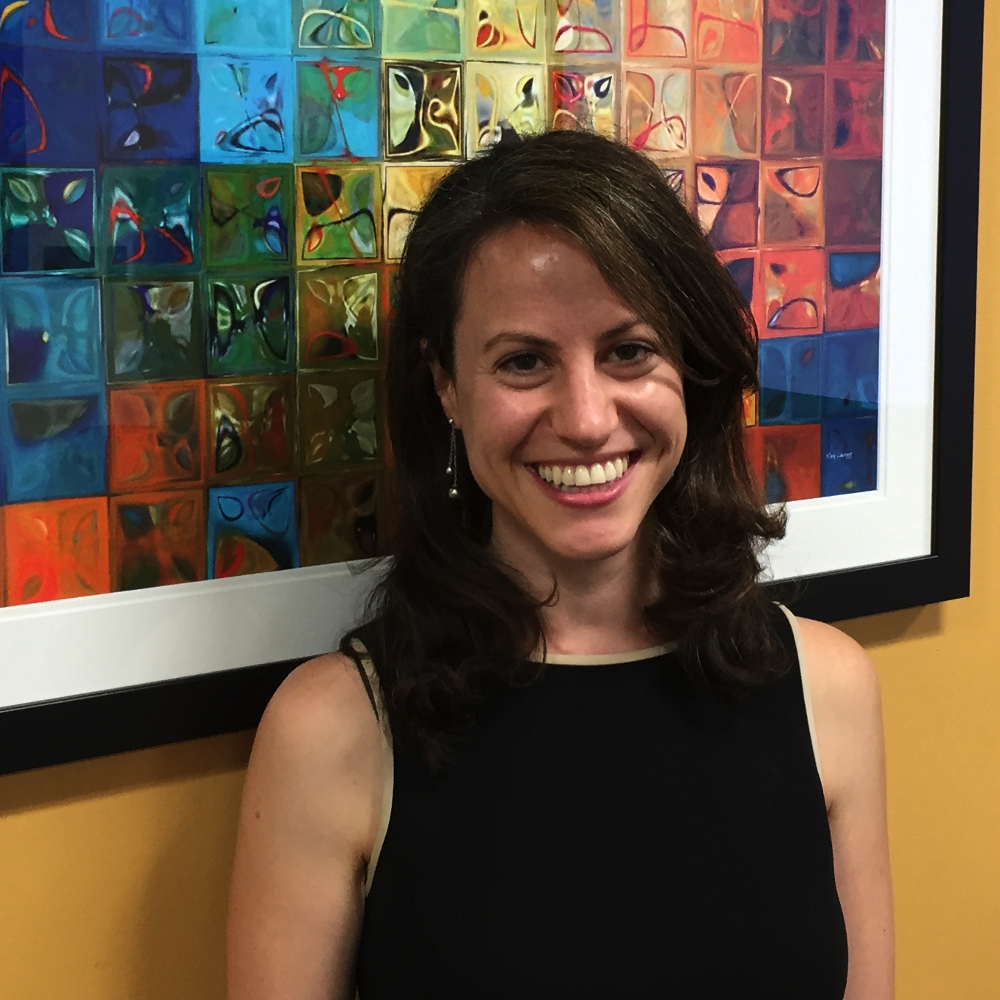
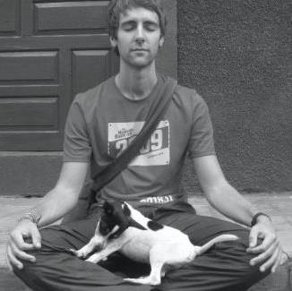
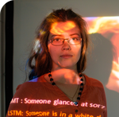
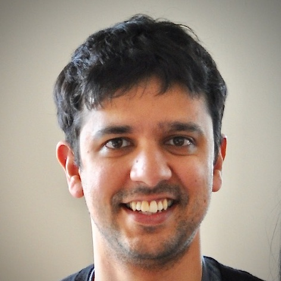
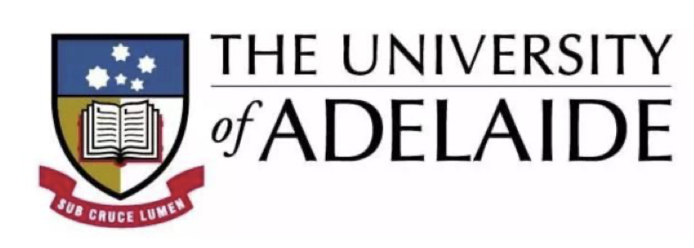

|
9 AM - 9:45 AM PT |

|
Panel-1: Future Directions
Danna Gurari, Felix Hill, Mateusz Malinowski, Jiasen Lu, Dimosthenis Karatzas, Nassim Parvin Recording available now: [Video] (Panel ended) To join Panel-1, visit: http://cvpr20.com/event/panel-1-future-directions-w64. |
|
12 PM - 1:00 PM PT |

|
Live QA-1
Individual live QA for challenge related talks and poster spotlight presenters. Join using the Zoom link for the corresponding talk on http://cvpr20.com/visual-question-answering-and-dialog. |
|
3 PM - 3:45 PM PT |

|
Panel-2: Future Directions
Douwe Kiela, Anna Rohrbach, Amanpreet Singh, Ani Kembhavi, Zhou Yu Recording available now: [Video] (Panel ended) To join Panel-2, visit: http://cvpr20.com/event/panel-2-future-directions-w64. |
|
12 AM - 1:00 AM PT |
|
Live QA-2
Individual live QA for challenge related talks and poster spotlight presenters. Join using the Zoom link for the corresponding talk on http://cvpr20.com/visual-question-answering-and-dialog. |
Visual Question Answering and Dialog Workshop
at CVPR 2020, June 14
Corresponding page on CVPR 2020 website: http://cvpr20.com/visual-question-answering-and-dialog
Please use the above website to join the live sessions and ask questions using text based chat.
|
Recording: [Video] |
Panel-1: Future Directions
Danna Gurari, Felix Hill, Mateusz Malinowski, Jiasen Lu, Dimosthenis Karatzas, Nassim Parvin [More Info] |
|
|
|
Live QA-1
Individual live QA for challenge related talks and poster spotlight presenters. [More Info] |
|
|
Recording: [Video] |
Panel-2: Future Directions
Douwe Kiela, Anna Rohrbach, Amanpreet Singh, Ani Kembhavi, Zhou Yu [More Info] |
|
|
|
Live QA-2
Individual live QA for challenge related talks and poster spotlight presenters. [More Info] |
|
Home Program Poster Spotlights

Introduction
The primary goal of this workshop is two-fold. First is to benchmark progress in Visual Question Answering and Visual Dialog.
-
Visual Question Answering
-
VQA: This track is the 5th challenge on the VQA v2.0 dataset introduced in Goyal et al., CVPR 2017.
The 2nd, 3rd and 4th editions were organised at CVPR 2017, CVPR 2018 and CVPR 2019 on the VQA v2.0 dataset, and the 1st edition was organised at CVPR 2016 on the VQA v1.0 dataset introduced in Antol et al., ICCV 2015.
VQA v2.0 is more balanced and reduces language biases over VQA v1.0, and is about twice the size of VQA v1.0.
Challenge link: https://visualqa.org/challenge
Evaluation Server: https://evalai.cloudcv.org/web/challenges/challenge-page/514/overview
Submission Deadline: Friday, May 15, 2020 23:59:59 GMT () -
TextVQA+TextCaps: There are 2 subtracks under this track.
-
TextVQA: This sub-track is the 2nd challenge on the TextVQA dataset introduced in Singh et al., CVPR 2019.
TextVQA requires models to read and reason about text in an image to answer questions based on them.
In order to perform well on this task, models need to first detect and read text in the images.
Models then need to reason about this to answer the question.
The 1st edition of the TextVQA Challenge was organised at CVPR 2019.
Challenge link: https://textvqa.org/challenge
Evaluation Server: https://evalai.cloudcv.org/web/challenges/challenge-page/551/overview
Submission Deadline: May 15, 2020 23:59:59 GMT () -
TextCaps: TextCaps requires models to read and reason about text in images to generate captions about them.
Specifically, models need to incorporate a new modality of text present in the images and reason over it and visual content in the image to generate image descriptions.
Challenge link: https://textvqa.org/textcaps/challenge
Evaluation Server: https://evalai.cloudcv.org/web/challenges/challenge-page/573/overview
Submission Deadline: May 15, 2020 23:59:59 GMT () -
VizWiz: This track is the 2nd VQA challenge on the VizWiz dataset introduced in Gurari et al., CVPR 2018.
The 1st edition was organized at ECCV2018 on a deprecated version.
This track focuses on answering visual questions that originate from a real use case where blind people were submitting images with recorded spoken questions in order to learn about their physical surroundings.
Challenge link: https://vizwiz.org/tasks-and-datasets/vqa/
Evaluation Server: https://evalai.cloudcv.org/web/challenges/challenge-page/523/overview
Submission Deadline: Friday, May 15, 2020 23:59:59 PM GMT () -
The 3rd edition of the Visual Dialog Challenge will be hosted on the VisDial v1.0 dataset introduced in Das et al., CVPR 2017.
The 1st and 2nd editions of the Visual Dialog Challenge was organised on the VisDial v1.0 dataset at ECCV 2018 and CVPR 2019.
Visual Dialog requires an AI agent to hold a meaningful dialog with humans in natural, conversational language about visual content.
Specifically, given an image, a dialog history (consisting of the image caption and a sequence of previous questions and answers), the agent has to answer a follow-up question in the dialog.
Challenge link: https://visualdialog.org/challenge
Evaluation Server: https://evalai.cloudcv.org/web/challenges/challenge-page/518/overview
Submission Deadline: May 14, 2020 23:59:59 GMT ()
There will be three tracks in the Visual Question Answering Challenge this year.
Visual Dialog
The second goal of this workshop is to continue to bring together researchers interested in visually-grounded question answering, dialog systems, and language in general to share state-of-the-art approaches, best practices, and future directions in multi-modal AI. In addition to invited talks from established researchers, we invite submissions of extended abstracts of at most 2 pages describing work in the relevant areas including: Visual Question Answering, Visual Dialog, (Textual) Question Answering, (Textual) Dialog Systems, Commonsense knowledge, Vision + Language, etc. The submissions are not specific to any challenge track. All accepted abstracts will be presented as posters at the workshop to disseminate ideas. The workshop is on June 14, 2020, at the IEEE Conference on Computer Vision and Pattern Recognition, 2020.
Invited Speakers and Panelists

University of Texas at Austin
Danna Gurari
University of Texas at Austin

DeepMind
Felix Hill
DeepMind
Douwe Kiela
Facebook AI Research

UC Berkeley
Anna Rohrbach
UC Berkeley
Mateusz Malinowski
DeepMind
Amanpreet Singh
Facebook AI Research
Nassim Parvin
Georgia Tech

Allen Institute for Artificial Intelligence
Ani Kembhavi
Allen Institute for Artificial Intelligence
Jiasen Lu
Allen Institute for Artificial Intelligence
Dimosthenis Karatzas
Universitat Autónoma de Barcelona
Zhou Yu
University of California, Davis
Program
Corresponding page on CVPR 2020 website: http://cvpr20.com/visual-question-answering-and-dialog.Please use the above website to join the live sessions and ask questions using text-based chat.
Live
Prerecorded
|
|
 |
Welcome
Aishwarya Agrawal (DeepMind) [Video] [Slides] |
|
|
|
Invited Talk
Title: Visual Question Answering: Challenges and Opportunities for a Real-World Application Danna Gurari (University of Texas at Austin) [Video] [Slides] |
|
|
|
Invited Talk
Title: Embodied language learning and the power of prediction Felix Hill (DeepMind) [Video] [Slides] |
|
|
|
Invited Talk
Title: Benchmarking Progress in AI: Adversarial NLI & Hateful Memes Douwe Kiela (Facebook AI Research) [Video] [Slides] |
|
|
|
Invited Talk
Title: Learning to fill-in-the-blanks in video and language Anna Rohrbach (UC Berkeley) [Video] [Slides] |
|
|
|
Invited Talk
Title: Visual Question Answering and Related Topics Mateusz Malinowski (DeepMind) [Video] [Slides] |
|
|
|
VQA Challenge Talk (Overview, Analysis and Winner Announcement)
Ayush Shrivastava (Georgia Tech) [Video] [Slides] |
|
|
|
VQA Challenge Winner Talk
Team: MoVie+GridFeat Members: Duy-Kien Nguyen, Huaizu Jiang, Vedanuj Goswami, Licheng Yu and Xinlei Chen [Video] [Slides] |
|
|
|
TextVQA Challenge Talk (Overview, Analysis and Winner Announcement)
Amanpreet Singh (Facebook AI Research) [Video] [Slides] |
|
|


 |
TextVQA Challenge Winner Talk
Team: NWPU_Adelaide_Team Members: Chenyu Ga, Qi Zhu, Peng Wang, Hui Li, Yuliang Liu, Anton van den Hengel and Qi Wu [Video] [Slides] |
|
|
|
VizWiz-VQA Challenge Talk (Overview and Winner Announcement)
Danna Gurari, Samreen Anjum (University of Texas at Austin) [Video] [Slides] |
|
|
|
Vizwiz-VQA Challenge Winner Talk
Members: Runze Zhang, Xiaohchuan Li, Liang Jin, Baoyu Fan and Zhenhua Guo [Video] [Slides] |
|
|


|
VizWiz-VQA Challenge Runner-up Talk
Team: Sudoku Members: Zhicheng Guo, Jiaxuan Zhao, Yan Zhang and Licheng Jiao [Video] [Slides] |
|
|
|
Poster Spotlights
To watch the poster spotlights, visit: https://visualqa.org/posters_2020. |
|
|
 |
TextCaps Challenge Talk (Overview, Analysis and Winner Announcement)
Oleksii Sidrov (Facebook AI Research) [Video] [Slides] |
|
|
|
TextCaps Challenge Winner Talk
Team: colab_buaa Members: Zhaokai Wang, Renda Bao and Si Liu [Video] [Slides] |
|
|
|
Visual Dialog Challenge Talk (Overview, Analysis and Winner Announcement)
Vishvak Murahari (Georgia Tech) [Video] [Slides] |
|
|
|
Visual Dialog Challenge Winner Talk
Team: Technion Members: Idan Schwartz, Alex Schwing and Tamir Hazan [Video] [Slides] |
|
|
|
Invited Talk
Title: Supercharging Vision and Language Research with MMF Amanpreet Singh (Facebook AI Research) [Video] [Slides] |
|
|
|
Invited Talk
Title: Grounding Situations Ani Kembhavi (Allen Institute for Artificial Intelligence) [Video] [Slides] |
|
|
|
Invited Talk
Title: Multi-Task Vision and Language Representation Learning Jiasen Lu (Allen Institute for Artificial Intelligence) [Video] [Slides] |
|
|
|
Invited Talk
Title: Scene Text VQA: Modelling the interplay between visual and textual information Dimosthenis Karatzas (Universitat Autónoma de Barcelona) [Video] [Slides] |
|
|
|
Invited Talk
Title: Augment Machine Intelligence with Multimodal Information Zhou Yu (University of California, Davis) [Video] [Slides] |
|
|
|
Closing Remarks
Aishwarya Agrawal (DeepMind) [Video] [Slides] |
Submission Instructions
We invite submissions of extended abstracts of at most 2 pages (excluding references) describing work in areas such as: Visual Question Answering, Visual Dialog, (Textual) Question Answering, (Textual) Dialog Systems, Commonsense knowledge, Video Question Answering, Video Dialog, Vision + Language, and Vision + Language + Action (Embodied Agents). Accepted submissions will be presented as posters at the workshop. The extended abstract should follow the CVPR formatting guidelines and be emailed as a single PDF to the email id mentioned below.
-
Dual Submissions
We encourage submissions of relevant work that has been previously published, or is to be presented at the main conference. The accepted abstracts will not appear in the official IEEE proceedings.
Where to Submit?
Please send your abstracts to visualqa.workshop@gmail.com
Dates
January 2020
Challenge Announcements
May 15, 2020
Extended
Workshop Paper Submission
mid-May 2020
Challenge Submission Deadlines
May 22, 2020
Notification to Authors
June 14, 2020
Workshop
Organizers


Sponsors
This work is supported by grants awarded to Dhruv Batra and Devi Parikh.
Contact: visualqa.workshop@gmail.com